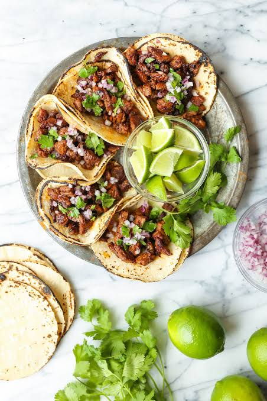

Classic Mexican Tacos de Carne Asada

Carne Asada Tacos are a staple of Mexican street food, featuring tender, juicy flank steak marinated in citrus juice, garlic, and fresh cilantro. Grilled to smoky perfection and served on warm corn tortillas, these tacos offer a perfect balance of savory, tangy, and fresh flavors that are incredibly easy to assemble.
Ingredients
- 1.5 lbs (700g) flank steak or skirt steak
- 12 small corn tortillas
- 1/4 cup olive oil
- 1/4 cup fresh lime juice
- 3 cloves garlic, minced
- 1/2 cup fresh cilantro, chopped
- 1 tsp ground cumin
- 1 white onion, finely diced
- Salt and black pepper to taste
- Lime wedges for serving
Instructions
- Marinate the Meat: In a large bowl or zip-top bag, combine the olive oil, lime juice, minced garlic, half of the chopped cilantro, cumin, salt, and pepper. Add the steak, coat it well, and let it marinate for at least 30 minutes.
- Grill the Steak: Heat a grill pan or outdoor grill over high heat. Cook the marinated steak for 5 to 6 minutes per side, or until it reaches your desired level of doneness.
- Rest and Slice: Transfer the grilled steak to a cutting board and let it rest for 5 to 10 minutes to keep the juices inside. Slice the meat against the grain, then chop it into small, bite-sized cubes.
- Warm the Tortillas: Heat a dry skillet over medium-high heat. Warm each corn tortilla for about 30 seconds on each side until they are soft and pliable, then stack them under a clean towel to keep warm.
- Assemble the Tacos: Fill each warm tortilla with a generous spoonful of chopped carne asada. Top with the finely diced white onion and the remaining fresh cilantro, and serve immediately with lime wedges.
Home